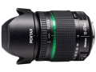

无忌
器材库
全部器材
产品年表
名词百科
榜单
器材库
> APS画幅镜头 > smc DA 18-270/3.5-6.3 ED SDM

宾得
smc DA 18-270/3.5-6.3 ED SDM
4.04
综合评分
分类
APS画幅镜头
点评
0 条
图片
0 张
评测
0 篇
该镜头拥有15倍变焦能力，采用16片13组，含2片ED镜片的镜头结构。内置7片光圈叶片，最近对焦距离为0.49m。另外还配备了变焦锁装置。
产品类型
APS画幅镜头
综合评分
4.04分
无忌评测
暂无评测
规格参数
网友点评
(0)
产品图 / 样片
(0)
评测文章
(0)
详细规格
镜头类型
标准变焦镜头
发布日期
2012-09-11
厂家推荐价格
70,000.00 （日元）
焦距
18mm-270mm
等效35mm画幅焦距
27.5mm-414mm
最大光圈
f/3.5-f/6.3
最小光圈
f/22-f/45
视角（对角）
76°-6°
镜头结构
16片/13组
低/超低色散镜片
2片
光圈叶片
7片
最近对焦距离
49cm
最大放大倍率
0.26倍
驱动马达
SDM（超声波马达）
滤镜口径
62mm
镜头卡口
Pentax AF
防抖
否
颜色
黑色
尺寸
75.8×89.0mm
重量
453g
该产品暂无存档的网友点评
该产品暂无存档的产品图
评测 / 相关文章
该产品暂无存档的评测文章
相关文章
［资讯］宾得DA 18-270/3.5-6.3 ED SDM
（原站已下线）
［资讯］宾得理光发布smc 18-270/3.5-6.3 ED SDM
（原站已下线）